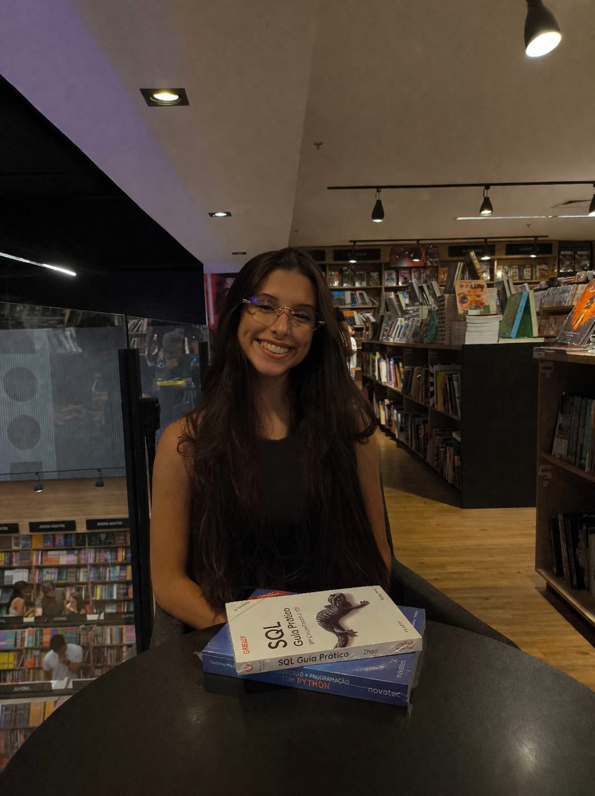

Estou construindo minha trajetória em tecnologia por meio de projetos que envolvem desenvolvimento, dados, interfaces e soluções digitais. Busco transformar necessidades reais em aplicações funcionais, bem estruturadas e com uma experiência clara para quem utiliza.

Estou no início da minha carreira em tecnologia e uso cada projeto como uma oportunidade para ampliar meu repertório técnico e desenvolver novas competências. Este portfólio reúne experiências profissionais, acadêmicas e pessoais em diferentes frentes da tecnologia.
Aplicações web, automações e soluções digitais.
Dashboards, indicadores e visualização de informações.
Organização visual, prototipação e experiência de uso.
Aplicação prática de conceitos em diferentes áreas da computação.
Esta seção é atualizada automaticamente a partir dos repositórios públicos do meu GitHub.
Projetos, oportunidades e conexões profissionais em tecnologia.
O código, histórico de alterações e documentação ficam disponíveis no repositório do projeto.
Ver repositório →